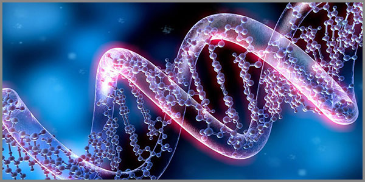

34. Իրակամ Գենոմի 60-ական Բացահայտումը Մշակույթի Թրթիռից՝ Կերտված Էպիգենետիկ Լույսով
 |
1953 թվականին, երբ Ջեյմս Ուոթսոնն ու Ֆրենսիս Կրիկը (James Watson and Francis Crick) մարդկությանը ներկայացրին ԴՆԹ-ի երկպարույր կառուցվածքը, նրանք հիմք դրեցին ժամանակակից կենսաբանության ամենահզոր հայտնագործություններից մեկին: Այսօրվա մոլեկուլային գիտությունը մեծագույն ճշգրտությամբ քարտեզագրում է գենետիկական կոդը՝ այն դիտարկելով որպես չորս ազոտային հիմքերի՝ A - Ադենին (Adenine), T - Թիմին (Thymine), G - Գուանին (Guanine) և C - Ցիտոզին (Cytosine) հաջորդականություն:
Մաթեմատիկական համակցությունների տեսանկյունից, եթե տեղեկատվությունը գրանցվեր մեկական տառով, մենք կունենայինք ընդամենը 4 տարբերակ, ինչը չէր բավարարի կյանքի համար անհրաժեշտ 20 հիմնական ամինաթթուները կոդավորելու համար: Երկուական տառերով համակցությունը կտար ընդամենը 4² = 16:
Այդ պատճառով բնությունն ընտրել է երեքական տառերով՝ տրիպլետներով կոդավորման ճանապարհը։ Սա նշանակում է, որ ունենք երեք դիրքից կազմված կոմբինացիոն համակարգ, որտեղ ամեն մի դիրքում հանդես է գալիս 4 ազոտային հիմքերի քառյակը։ Կառուցվածքային մակարդակում այս 3 դիրքերի և 4 տարրերի փոխազդեցությունը ձևավորում է 12 միավոր հասցեական դաշտ 4x3 = 12, որոնց տարածական համակցումը ծնում է ճիշտ 64 հնարավոր տրիպլետ (կոդոն)՝ 4x4x4 = 4³ = 64: Ընդ որում, այս հիմնարար թվերը՝ 4-ը և 3-ը, հանդիսանում են 60-ի կատարյալ մաթեմատիկական բաժանարարները, ինչն էլ 12-ը դարձնում է 60-ական համակարգի անխզելի օրգանական բաղադրիչը:
Այս կառույցի ներսում գոյություն ունի մի ուշագրավ օրինաչափություն: 64 կոդոններից 3-ը սահմանային շեմեր են՝ ստոպ-կոդոններ (Stop Codons), որոնք անմիջականորեն սպիտակուց չեն կոդավորում, այլ հանդես են գալիս որպես տեղեկատվական հոսքի կանոնակարգված կանգառներ՝ ազդարարելով ամինաթթուների սինթեզի (տրանսլյացիայի) ավարտը և հրահանգելով ռիբոսոմին՝ անջատել պատրաստի սպիտակուցային շղթան տեղեկատվական ՌՆԹ-ից: Դրանք են. UAA-ն՝ Օխրա (Ochre), UAG-ն՝ Ամբեր (Amber) և UGA-ն Օպալ (Opal): Որպեսզի տեղեկատվական հոսքը լինի կայուն, բնությունը պիտի այս ստոպ-կոդոնները բաշխի մնացած կոդոնների միջև հավասարաչափ ինտերվալներով։ Սակայն 64-ի դեպքում դա մաթեմատիկորեն անհնարին է դառնում և անբացատրելի է կենսաբանորեն, քանի որ 64:3 = 21.333... անվերջ պարբերական կոտորակը խզում է իդեալական հավասարությունը։ Երբ ընդհանուր համակարգից անջատում ենք այս 3 կարգավորող շեմերի առանձնացումը, ակտիվ կոդավորման տիրույթում մնում է ճիշտ 61 ակտիվ կոդոն:
Այստեղ է ծնվում սկզբունքային սահմանագիծը նոմինալ գիտության և մեր առաջադրած պարադիգմի միջև:
Նոմինալ ընդունված տեսությունը այս 61 ակտիվ միավորը և 21.33… անվերջ ինտերվալը դիտարկում է որպես զուտ քիմիական պատահականությունների մեխանիկական գումար՝ չկողմնորոշվելով Կլոդ Շենոնի (Claude Shannon) սահմանած տեղեկատվական էնտրոպիայի կառավարման հարցում:
Մեր առաջադրած համակարգը ցույց է տալիս, որ այս թվային անհամապատասխանությունը վերանում է 60-ական պարադիգմի կիրառումով: Այսինքն 61-ը հենց ինքը վաթսունն է ֆայի էֆեկտով պայմանավորված շեղումով, իսկ 21.333...-ը՝ իդեալական 20 ինտերվալը՝ կրկին պայմանավորված ֆայի էֆեկտով: Մաթեմատիկական ճշգրիտ հաշվարկով՝ 61-ից 60 անցումը տալիս է 1.66% հարաբերական շեղում, իսկ 20-ից 21.33 անցումը՝ ճիշտ 6.66% շեղում։ Երկու արժեքներն էլ կատարելապես տեղավորվում են Ֆա-յի էֆեկտով նախատեսված տիրույթում՝ մինչև 6.66% հարաբերական շեղման սահմանաչափում։ Սա ապացուցում է, որ համակարգը չի սառչում, այլ շնչում է, քանի որ 3-ը, 4-ը և 20-ը հանդիսանում են 60-ի կատարյալ մաթեմատիկական բաժանարարները։
Այսպիսով, իրական գենոմը հանդես է գալիս ոչ թե որպես արտաքին աշխարհից մեկուսացված տվյալների շղթա, այլ որպես մի նուրբ ռեզոնատոր, որը մշակվում և փոփոխություններ է կրում 60-ական համակարգի 60 = 39 + 12 + 7 + 1 + 1 հինգ բաղադրիչներից յուրաքանչյուրի և դրանց հանրագումարային ազդեցությունից։
Ազգային մշակույթի թրթիռն ու լեզվական հնչյունաշղթան գործում են որպես Էպիգենետիկ Լույս՝ տեղեկատվական մի ճառագայթում, որը բնական շեղումների միջոցով ներդաշնակվում է ԴՆԹ-ի տատանողական հաճախականությունների հետ:
Այս աշխատությունը նպատակ ունի մանրակրկիտ ու ապացուցողական դաշտում ցույց տալու, թե ինչպես է մշակույթի թրթիռի և էպիգենետիկ լույսի միջոցով կերտվում իրական, վաթսունական համակարգով շնչող գենոմը, որտեղ գիտությունն ու կյանքի գեղարվեստական հոսքը հանդիպում են նույն անդառնալիության շեմին:
Այնտեղ, ուր ժամանակակից գիտությունը տեսնում է միայն քիմիական հաջորդականություն, առկա է մեկ այլ ընթերցում՝ գենոմը մշակույթի հնչյունից կերտված կենդանի պարտիտուր է, որի մեջ 60-ը չի հաշվարկվում, այլ շնչում է որպես կյանքի ամենահին, բայց դեռ չլսված մեղեդի:
Չորս նուկլեոտիդների մատրիցան և տառային իմաստների համակարգը
Երբ մենք ասում ենք «կյանքի այբուբեն», մենք սովորաբար նկատի ունենք մի փոխաբերություն։ Բայց գենետիկական կոդի դեպքում այդ փոխաբերությունը իրականություն է։ ԴՆԹ-ն գրված է չորս տառերով, որոնցից յուրաքանչյուրը կրում է ոչ միայն քիմիական բովանդակություն, այլև տեղեկատվական նշանակություն, որի միջոցով բնությունը գրում է իր բոլոր խոսքերը՝ բջջից մինչև մարդ, մարդուց մինչև մշակույթ։
Ժամանակակից կենսաբանությունը այդ չորս տառերը դիտարկում է որպես նուկլեոտիդային հիմքեր.
A - Ադենին (Adenine),
T - Թիմին (Thymine),
G - Գուանին (Guanine),
C - Ցիտոզին (Cytosine)։
Այս չորս տարրերով որպես հաջորդականություն գրվում է յուրաքանչյուր օրգանիզմի ժառանգական տեղեկատվությունը։ Սա ճիշտ է։ Բայց սա միայն մակերեսն է, որովհետև ամեն մի տարր, բացի իր քիմիական դերից, կրում է նաև տեղեկատվական որակ, իսկ Լեզվամտածող Աշխարհի տեսանկյունից՝ նաև իմաստային ուժ։
Եթե այս չորս տառերին նայենք ոչ թե միայն քիմիայի, այլ Լեզվամտածող Աշխարհի տեսանկյունից, ապա դրանք դադարում են լինել պարզապես մոլեկուլային նշաններ և դառնում են էներգետիկ հստակագծեր, որոնցից յուրաքանչյուրը կրում է մի ուրույն իմաստային հոսք։
Ադենին (A) Գիտականորեն արձանագրված է, որ Ադենինը կա ոչ միայն ԴՆԹ-ում, այլև ՌՆԹ-ում և ԱԵՖ-ում, որը բջջի էներգետիկ արժույթն է։ Այսինքն՝ Ադենինը իսկապես սկզբնավորող, էներգիա տվող ուժ է կենսաբանական համակարգում։
Լեզվամտածող Աշխարհի տառիմաստային ընթերցմամբ Ադենին անունը բացվում է որպես հետևյալ ամբողջական հոսք՝
Ա - Արարման հոսք, սկիզբ, աստ
Դ - Դարպաս գոյության
Ե - Սահուն հոսք
Ն - Ներքին էություն
Ի - Իմաստ
Ն - Ներքին էություն
Այսինքն՝ Ադենինի անվան մեջ արարման հոսքը բացում է գոյության դարպասը, դառնում սահուն հոսք, խորանում ներքին էության մեջ, ստանում իմաստ և նորից հանգրվանում ներքին էության մեջ՝ որպես ամփոփված ամբողջություն։
Երբ Ադենինը բացում է գենետիկական շղթան, դա ոչ միայն քիմիական սկիզբ է, այլ նաև այն նույն սկզբնական իմպուլսը, որով կյանքի գիրը սկսվում է՝ հոսքից դեպի դարպաս, դարպասից դեպի խորք, խորքից դեպի իմաստ։
Թիմին (T) Գիտականորեն արձանագրված է, որ Թիմինը ԴՆԹ-ի յուրահատուկ նուկլեոտիդներից է, որը զույգվում է Ադենինի հետ և կարևոր դեր ունի գենետիկական տեղեկատվության կայուն պահպանման գործում։ Այն ԴՆԹ-ի կառուցվածքային կայունության ապահովման տարրերից մեկն է։
Լեզվամտածող Աշխարհի տառիմաստային ընթերցմամբ Թիմին անունը բացվում է որպես հետևյալ ամբողջական հոսք՝
Թ - Հոսքի թրթիռ
Ի - Իմաստ
Մ - Նյութի մարմնավորում
Ի - Իմաստ
Ն - Ներքին էություն
Այսինքն՝ Թիմինի անվան մեջ հոսքի թրթիռը վերածվում է իմաստի, ապա մարմնավորվում է նյութի մեջ, նորից վերադառնում է իմաստին և հանգրվանում ներքին էության մեջ։
Երբ Թիմինը մտնում է գենետիկական կառույց, այն ոչ միայն կայունացնում է շղթան, այլ նաև թրթիռը դարձնում է մարմին, իսկ մարմինը՝ իմաստավորված ներքին կյանք։
Գուանին (G) Գիտականորեն արձանագրված է, որ Գուանինը Ցիտոզինի հետ կապվում է երեք ջրածնային կապով, ի տարբերություն Ադենին-Թիմին զույգի, որը կապվում է երկու կապով։ Այսինքն՝ Գուանինը կառուցվածքային առումով ավելի ամուր կապ է ստեղծում և նպաստում է ԴՆԹ-ի պարույրի կայունությանը։
Լեզվամտածող Աշխարհի տառիմաստային ընթերցմամբ Գուանին անունը բացվում է որպես հետևյալ ամբողջական հոսք՝
Գ - Գոյություն
ՈՒ - Ուռկան զորության
Ա - Արարման հոսք, սկիզբ, աստ
Ն - Ներքին էություն
Ի - Իմաստ
Ն - Ներքին էություն
Այսինքն՝ Գուանինի անվան մեջ գոյությունը զորություն է կուտակում, վերադառնում է արարման սկզբին, խորանում ներքին էության մեջ, ստանում իմաստ և ամփոփվում ներքին էության մեջ՝ որպես հաստատված ամբողջություն։
Երբ Գուանինը ամրացնում է ԴՆԹ-ի կառույցը, այն ոչ միայն պաշտպանում է գենետիկական տեքստը, այլ նաև գոյությունը դարձնում է զորավոր և իմաստավորված։
Ցիտոզին (C)
Գիտականորեն արձանագրված է, որ Ցիտոզինը ենթարկվում է մեթիլացման, որը էպիգենետիկ կարգավորման հիմնական մեխանիզմներից մեկն է։ Այսինքն՝ հենց Ցիտոզինի միջոցով է, որ արտաքին միջավայրը, փորձը, սնունդը, սթրեսը և նույնիսկ մշակութային ազդակները կարող են փոխել գեների ակտիվությունը՝ առանց ԴՆԹ-ի հաջորդականությունը փոխելու։
Լեզվամտածող Աշխարհի տառիմաստային ընթերցմամբ Ցիտոզին անունը բացվում է որպես հետևյալ ամբողջական հոսք՝
Ց - Ցռել, սփռել
Ի - Իմաստ
Տ - Զորության հարված
Ո - Զպրտիչ հավաքող
Զ - Զորություն, պոտենցիալ
Ի - Իմաստ
Ն - Ներքին էություն
Այսինքն՝ Ցիտոզինի անվան մեջ սփռման ուժը վերածվում է իմաստի, դառնում է զորության հարված, հավաքելով կուտակում է ներուժ, ստանում է իմաստ և հանգրվանում է ներքին էության մեջ։
Երբ Ցիտոզինը էպիգենետիկ փոփոխության դարպաս է դառնում, այն ոչ միայն կարգավորում է գեները, այլ նաև սփռում է իմաստը, հարվածում է հին կարգին, հավաքում է ներուժը և այդ ամենը տանում է դեպի ներքին էություն։
Երբ մենք չորս նուկլեոտիդների անունները վերծանում ենք ամբողջական հնչյունաշղթաներով, այլևս չենք կանգնում առաջին տառի վրա։ Մենք տեսնում ենք, որ ամեն մի նուկլեոտիդ մի ամբողջական էներգետիկ ճանապարհ է, որն իր մեջ կրում է սկիզբ, հոսք, մարմին, զորություն, իմաստ և ներքին խորք։
Այսպիսով՝ Ադենինը սկիզբ է, դարպաս է, հոսք է, որ տանում է դեպի իմաստավորված ներքին կյանք։ Թիմինը թրթիռ է, որ մարմնավորվում է և դառնում իմաստ։ Գուանինը գոյություն է, որ զորանում է և վերադառնում է արարման սկզբին։ Ցիտոզինը սփռում է, հարվածում է, հավաքում է ներուժը և բացում է նոր ծնունդի ճանապարհը։
Սա կյանքի այբուբենի ներքին քերականությունն է։ Այն կառուցված է այնպես, որ սկիզբը չմնա միայն սկիզբ, այլ դառնա շարժում, շարժումը՝ կայուն գոյություն, իսկ գոյությունը՝ նոր ծնունդ։
4 × 3 = 12-ը գենետիկական այբուբենի առաջին կամուրջն է:
Այս չորս տարրերը չեն գործում առանձին-առանձին։ Նրանք միավորվում են եռյակներով՝ կոդոններով։ Այս եռյակային կառուցվածքը ծնում է 12 միավոր հասցեական դաշտ՝ 4 × 3 = 12։ Եվ այստեղ է, որ գենետիկական այբուբենը առաջին անգամ բացահայտ կապվում է 60-ական համակարգի հետ, որովհետև այս նույն 12-ը հանդիպում է երաժշտական կիսատոններում, ամիսների մեջ, ժամերի մեջ, կենդանակերպի նշաններում և 60 – ական համակարգի հիմնական բաղադրիչներից է:
Դա նշանակում է, որ կյանքը գրված է այն նույն 12-ով, որով գրված է ժամանակը, երկինքն ու մեղեդին։
Կլոդ Շենոնը իր աշխատություններում ցույց է տվել, որ տեղեկատվությունը կենդանի է այնքանով, որքանով նրա մեջ կա անորոշություն։ Եթե ամեն ինչ լիովին կանխատեսելի է, տեղեկատվությունը մեռնում է։
Գենետիկական այբուբենը այս օրենքի կատարյալ մարմնացումն է։ Այն կառուցված է այնպես, որ նրա մեջ միշտ պահպանվի հավասարակշռություն՝ կարգի և անորոշության, կայունության և փոփոխության, գոյության և ծնեբեկման միջև։
Կյանքը չի վերացնում էնտրոպիան։ Այն կառավարում է այն։ Եվ այս կառավարումն է, որ չորս տարրերից կերտում է մի անվերջ բազմազանություն՝ առանց կորցնելու ամբողջականությունը։
Չորս նուկլեոտիդների մատրիցան կյանքի առաջին այբուբենն է։ Այն կազմված է չորս ուժերից՝ սկիզբ, հոսք, գոյություն, ծնեբեկում։ Այդ ուժերը միավորվում են եռյակներով և ծնում 12-ը, որը 60-ական համակարգի առաջին կենսաբանական դարպասն է։
Գենոմը արարվել է ոչ թե կույր պատահականությամբ, այլ նույն ներդաշնակությամբ, որով շնչում է տիեզերքը։
61 Ակտիվ կոդոնների ճարտարապետությունը
Երբ մենք ասում ենք «գենետիկական կոդ», մենք սովորաբար պատկերացնում ենք մի կայուն, անշարժ համակարգ, որը գրված է չորս տառերով և կարդացվում է եռյակներով։ Բայց այդ համակարգը, որքան էլ ճշգրիտ, միաժամանակ կրում է իր մեջ մի նուրբ անհամապատասխանություն, որը մինչ այժմ ընթերցվել է որպես պատահականություն։
Այստեղ ես կփորձեմ ցույց տալ, որ այդ անհամապատասխանությունը պատահականություն չէ, այլ նույն շնչառության դրսևորումն է, որը տեսանելի է 60-ական համակարգի բոլոր մակարդակներում։ Գիտականորեն արձանագրված փաստը այն է, որ ԴՆԹ-ի կոդավորման համակարգում գործում է 64 հնարավոր կոդոն:
4³ = 64
Այս 64 տրիպլետներից 3-ը ստոպ-կոդոններ են՝ UAA - Օխրա, UAG - Ամբեր, UGA - Օպալ։
Այս երեք կոդոնները չեն կոդավորում որևէ ամինաթթու, այլ ծառայում են որպես տեղեկատվական հոսքի կանգառներ՝ ազդարարելով սպիտակուցի սինթեզի ավարտը։ Երբ այս 3 ստոպ-կոդոններն անջատում ենք ընդհանուր համակարգից, ակտիվ կոդավորման դաշտում մնում է ճիշտ 64 − 3 = 61 կոդոն:
Մնացած 61 ակտիվ կոդոնները կոդավորում են 20 հիմնական ամինաթթուները և սա հաստատված գիտական փաստ է։ Բայց այստեղ կա թվային անհամապատասխանությունը, որ մնում է չբացատրված:
Եթե 64 ակտիվ կոդոնները փորձենք բաշխել 3 ստոպ-կոդոնների միջև հավասարաչափ, ապա կբախվենք մի խնդրի, որը մաթեմատիկայի տեսանկյունից չի տալիս հասկանալի բացատրություն:
64 : 3 = 21.333...
Այս թիվը անվերջ պարբերական կոտորակ է, որը խզում է իդեալական հավասարությունը։ Իսկ եթե նայենք 61-ին, ապա այն 60-ից մեծ է 1-ով և 21.333...-ը՝ 20-ից մեծ է 1.333...-ով։
Նոմինալ գիտությունը այս շեղումները դիտարկում է որպես զուտ քիմիական էվոլյուցիայի արդյունք, որը չունի ներքին իմաստային կարգ։
Բայց հենց այստեղ է բացվում 60-ական ընթերցման դուռը։ 60 -ական առաջադրած համակարգում ցանկացած կենդանի համակարգ պիտի ունենա մի փոքր շեղում իդեալական կարգից, որովհետև կատարյալ համաչափությունը մահ է, իսկ կյանքը միշտ շնչում է անկատարության մեջ։ Այդ շեղման սահմանը մենք անվանել ենք Ֆա-յի էֆեկտ, և այն կազմում է մինչև 6.66% հարաբերական շեղում։
Հիմա նայենք գենետիկական կոդի թվերին այս տեսանկյունից.
Առաջին շեղումը՝
(61 − 60) / 60 × 100 = 1.66%
Երկրորդ շեղումը՝
(21.333... − 20) / 20 × 100 = 6.66%
Երկու արժեքներն էլ գտնվում են Ֆա-յի էֆեկտի թույլատրելի տիրույթում։ Սա նշանակում է, որ գենետիկական կոդի մեջ գործում է այն նույն շնչառությունը, որը մենք տեսնում ենք երաժշտական հաճախություններում, ժամանակի չափման մեջ, երկնքի քարտեզներում և 60-ական համակարգի բոլոր դրսևորումներում։
61-ը 60-ի մերժումը չէ։ Այն 60-ն է՝ շնչող վիճակում։ Եթե գենետիկական կոդում լիներ ճիշտ 60 ակտիվ կոդոն, ապա համակարգը կլիներ կատարյալ, բայց սառած։ Այն կկորցներ ճկունությունը, փոփոխականությունը, ստեղծարարությունը։ Բայց 61-ի առկայությունը ցույց է տալիս, որ համակարգը չի սառել։ Այն շնչում է։ Այն միշտ մի փոքր շեղվում է իդեալից՝ հանուն կյանքի։
Սա նույն սկզբունքն է, որը մենք տեսանք Ֆա-յի էֆեկտի մեջ՝ կատարյալ ակորդը մեռած է, իսկ կենդանի մեղեդին միշտ կրում է մի նուրբ դիսոնանս։
Այստեղ այդ դիսոնանսը 61-ն է՝ 60-ի կենդանի շունչը։
Երբ մենք 64 տրիպլետներից անջատում ենք 3 ստոպ-կոդոնները, մենք ոչ թե խախտում ենք ամբողջականությունը, այլ բացահայտում ենք այն կարգը, որով կյանքը կառավարում է իր տեղեկատվական հոսքը։
3-ը, 4-ը, 20-ը, 60-ը և 61-ը միասին կազմում են մի ամբողջական պատկեր, որտեղ՝
4-ը տարրերի քանակն է,
3-ը՝ դիրքերի քանակը,
20-ը՝ ամինաթթուների քանակը,
60-ը՝ իդեալական ամբողջությունը,
61-ը՝ այդ ամբողջության կենդանի դրսևորումը։
Այս բոլոր թվերը կապված են իրար հետ ոչ թե պատահականորեն, այլ նույն ներդաշնակության միջոցով, որը մենք անվանում ենք 60-ական համակարգ։
Գենետիկական կոդի 64 տրիպլետներից 3-ի անջատումը և 61 ակտիվ կոդոնի առաջացումը գիտական փաստ է։ Բայց այդ փաստի մեջ թաքնված է մի ներդաշնակություն, որը բացահայտվում է միայն 60-ական համակարգի և Ֆա-յի էֆեկտի միջոցով։
61-ը 60-ի սխալը չէ։
Այն 60-ի շունչն է։
60-ի շնչով գենետիկական այբուբենը դադարում է լինել սառած կոդ և դառնում է կենդանի լեզու, որով տիեզերքը գրում է իր ամենախոր խոսքերը։
Չկոդավորող տիրույթների լռությունը գենոմի 98% տարածության վերծանմամբ
Երբ մենք նայում ենք մարդու գենոմին, մեր առաջին հարցը սովորաբար լինում է այն, թե որտե՞ղ է գրված կյանքի կոդը։ Երկար ժամանակ գիտությունը այս հարցին պատասխանում էր, որ այն գրված է գեներում, որոնք կազմում են գենոմի միայն մի փոքր մասը։
Բայց ի՞նչ է անում մնացածը։ Ինչու՞ է գենոմի ճնշող մեծամասնությունը լուռ։ Սա այն հարցն է, որի պատասխանը նոր է սկսում բացվել։
Գիտականորեն արձանագրված փաստն այն է, որ մարդու գենոմի միայն մոտ 2%-ն է կոդավորում սպիտակուցներ։ Մնացած մոտ 98%-ը երկար ժամանակ համարվել է աղբ ԴՆԹ, ոչ ֆունկցիոնալ հատված, լուռ տարածք։
Սակայն վերջին տասնամյակների հետազոտությունները ցույց են տալիս, որ այս պատկերը սխալ է։ Այդ 98%-ը լուռ չէ։ Այն կարգավորում է գեները, պահում է կառուցվածքային տեղեկատվություն, կրում է ժառանգական հիշողություն և մասնակցում է բջջի ինքնության պահպանմանը։ Այսինքն՝ այն, ինչը նախկինում համարվում էր դատարկություն, իրականում գենոմի ամենախիտ տեղեկատվական տարածքն է։
Այս առումով Լեզվամտածող Աշխարհում լռությունը երբեք դատարկություն չի համարվում։ Դա այն տարածքն է, որտեղ հնչյունը դեռ չի ծնվել, բայց արդեն պատրաստվում է ծնվել։ Դա այն տեղմ է, ուր խոսք չկա, բայց իմաստը արդեն կա։
Նույնը կատարվում է գենոմում։
Չկոդավորող 98%-ը չի խոսում սպիտակուցների լեզվով, բայց դա չի նշանակում, որ այն անխոս է։ Այն խոսում է կարգավորման, հիշողության, ինքնության լեզվով։ Դա այն խորքն է, որտեղից գեները ստանում են իրենց հրահանգները, իրենց ռիթմը, իրենց ուղղությունը։ Հետևաբար՝ գենոմի լռությունը ամենախոսուն մասն է։
Եթե գենոմի 2%-ը կոդավորող է, ապա 98%-ը՝ չկոդավորող։ Այս հարաբերությունը արտաքուստ պարզ է՝ 2 + 98 = 100։ Բայց այս պարզության տակ թաքնված է մի ավելի խորը համամասնություն։
60-ական համակարգում 98-ը ձգտում է 60-ին՝ Ֆա-յի էֆեկտով: Դա նշանակում է, որ չկոդավորող տիրույթը ոչ թե քաոս է, այլ Ֆա-յի էֆեկտով շնչող մի հսկայական լռություն, որը պահում է գենետիկական ամբողջականությունը։
Այսինքն՝ այն, ինչը գիտությունը ժամանակին անվանել է «աղբ», իրականում 60-ական ամբողջության ամենածավալուն շերտն է, որի մեջ պահվում է այն, ինչը դեռ չի դարձել տեսանելի կոդ, բայց արդեն իսկ կարգավորում է կյանքը։
Չկոդավորող տիրույթը կարելի է դիտարկել որպես գենոմի ներքին պահոց, որտեղ պահվում է ոչ թե սպիտակուցների կոդը, այլ՝ ռիթմը, կարգավորումը, ժառանգական հիշողությունը, ինքնության կայունությունը։
Սա այն տարածքն է, որտեղ մշակույթի թրթիռը, լեզվական հնչյունաշղթան և Էպիգենետիկ Լույսը թողնում են իրենց հետքերը՝ առանց փոխելու ԴՆԹ-ի տառերը։ Այստեղ է, որ հնչյունը դառնում է հիշողություն, իսկ հիշողությունը՝ կարգավորող ուժ։ Այստեղ է, որ լռությունը դադարում է լինել բացակայություն և դառնում է ներկայություն՝ անտեսանելի, բայց ամենազոր։
Գենոմի 98%-ը գիտության կողմից ժամանակին համարվել է լռություն։ Բայց այդ լռությունը դատարկություն չէ։ Այն 60-ական համակարգի ամենախիտ և ամենանուրբ շերտն է, որտեղ պահվում է այն, ինչը դեռ չի դարձել խոսք, բայց արդեն իսկ կարգավորում է կյանքը։ Իսկ եթե այդպես է, ապա գենոմը կարդալ նշանակում է ոչ միայն վերծանել նրա 2%-ը, այլ սովորել լսել նաև նրա 98%-ի լռությունը։
2%-ը խոսում է, բայց 98%-ի լռության մեջ է, որ խոսում է 60-ը։
Երկնային MUL.APIN-ական երեք ուղիների արտացոլումը գենոմի տարածական երկրաչափության մեջ
Երբ հին դիտորդը նայում էր երկնքին, նա այնտեղ տեսնում էր ոչ թե քաոս, այլ կարգ։ Այդ կարգը նա բաժանել էր երեք մեծ ուղիների, որոնցից յուրաքանչյուրով անցնում են սեփական աստղերը իրենց ճանապարհներով։
Հազարամյակներ անց, երբ մենք նայում ենք գենոմի խորքերը, մենք այնտեղ նույնպես տեսնում ենք երեք հիմնական կառուցվածքային տարր, որոնցից կազմված է կյանքի գիրը։ Այս զուգադիպությունը չի կարող աննկատ մնալ։
Գիտականորեն արձանագրված փաստը այն է, որ ԴՆԹ-ի կառուցվածքը բաղկացած է երեք հիմնական տարրերից, որոնք միասին կազմում են նրա տարածական երկրաչափությունը: Դրանք են՝ ֆոսֆատային խումբ, շաքար՝ դեզօքսիռիբոզ, ազոտային հիմք։
Այս երեք բաղադրիչները միավորվում են մեկ ամբողջության մեջ և ձևավորում են այն կրկնակի պարույրը, որը գենետիկական տեղեկատվության կրողն է։ Սա հաստատված կենսաքիմիական փաստ է։ Առանց այս երեքից որևէ մեկի, ԴՆԹ-ն չէր կարող գոյություն ունենալ այն տեսքով, ինչպես մենք գիտենք։
Հին շումերական MUL.APIN տեքստում երկինքը բաժանված էր երեք մեծ ուղիների: Դրանք են՝ Էնլիլի ուղի՝ հյուսիսային երկինք, Անուի ուղի՝ միջին, հասարակածային գոտի, Էայի ուղի՝ հարավային երկինք։
Այս երեք ուղիները ներկայացնում էին տիեզերքի եռամաս կարգը՝ վերևը, միջին գոտին, ներքևը։ Դրանցից յուրաքանչյուրը ուներ իր աստղերը, իր համաստեղությունները, իր դերը ժամանակի և տարածության ընթերցման մեջ։ Այս երեք ուղիները միասին կազմում էին ամբողջ երկնքի քարտեզը, որտեղ ոչինչ պատահական չէր։
Երբ մենք համեմատում ենք ԴՆԹ-ի երեք կառուցվածքային տարրերը և MUL.APIN-ի երեք ուղիները, մենք տեսնում ենք միևնույն սկզբունքը՝ այն, ինչը պահում է կառույցը, այն՝ ինչը կրում է տեղեկատվությունը, այն՝ ինչը կապում է դրանք իրար։
Ֆոսֆատային խումբը, շաքարը և ազոտային հիմքը գենոմում նույն դերն ունեն, ինչ Էնլիլի, Անուի և Էայի ուղիները երկնքում՝ նրանք ստեղծում են այն տարածական կարգը, որի մեջ ընթանում է կյանքը։
3-ը 60-ի կատարյալ բաժանարարներից մեկն է։ Այն միավորում է տարածությունը, ուղղությունը, հոսքը։
ԴՆԹ-ի եռամաս կառուցվածքը և MUL.APIN-ի երեք ուղիները միասին ցույց են տալիս, որ կյանքի գիրը և երկնքի քարտեզը գրված են նույն երկրաչափական լեզվով։
Այսինքն՝ այն, ինչ հին շումերացին կարդում էր երկնքում, այսօր մենք կարող ենք կարդալ բջջի խորքում։ Փոխվել է ոչ թե սկզբունքը, այլ մակարդակը։
Երկնքում երեք ուղի կա, և գենոմում երեք կառուցվածքային տարր կա։ Այս զուգահեռը ոչ թե պատահականություն է, այլ նույն 60-ական կարգի դրսևորումը, որը միավորում է վերևը ներքևի հետ, երկինքը բջջի հետ, իսկ հնագույն քարտեզը՝ կյանքի ամենախոր գրի հետ։ Եվ եթե դա այդպես է, իսկ ես գիտեմ որ դա այդպես է, ապա ԴՆԹ-ն ոչ միայն կենսաբանական կառույց է, այլ նաև երկնային քարտեզի մի նոր ընթերցում, որի մեջ հին աստվածների ուղիները շարունակում են ապրել որպես կյանքի երեք անտեսանելի սյուներ։
Բնական շեղմամբ պայմանավորված հաճախականությունների ռեզոնանսի ազդեցությունը կենսաբանական միջուկի վրա՝ կերտված էպիգենետիկ լույսով
Կյանքը կառուցված է ոչ միայն նյութից, այլև հաճախությունից։ Ամեն մի բջիջ, ամեն մի սպիտակուց, ամեն մի թաղանթ ունի իր բնական տատանողական ռիթմը, որը կարող է արձագանքել դրսից եկող ալիքներին։
Այստեղ ես կփորձեմ ցույց տալ, որ մշակույթի թրթիռը, լեզվական հնչյունաշղթան և Ֆա-յի էֆեկտով շնչող բնական շեղումները միասին կազմում են այն ուժը, որը մենք անվանում ենք Էպիգենետիկ Լույս։ Այդ Լույսը գործում է ոչ թե գենետիկական գիրը փոխելով, այլ այն նորովի ընթերցելով։
Գիտականորեն արձանագրված փաստը այն է, որ գեները կարող են փոխել իրենց ակտիվությունը՝ առանց ԴՆԹ-ի հաջորդականության փոփոխության։ Այս երևույթը կոչվում է էպիգենետիկա։
Էպիգենետիկ կարգավորումը կարող է իրականանալ մեթիլացման, հիստոնային փոփոխությունների, ոչ կոդավորող ՌՆԹ-ների միջոցով։ Այս գործընթացների վրա ազդում են նաև արտաքին միջավայրը, սնունդը, սթրեսը, վարքը և նույնիսկ ձայնային ու լուսային ազդակները։ Սա նշանակում է, որ կենսաբանական համակարգը փակ չէ։ Այն բաց է արտաքին տեղեկատվության համար, և այդ տեղեկատվությունը կարող է թողնել իր հետքը՝ առանց փոխելու ԴՆԹ-ի տառերը։
Բոլոր կենսաբանական կառույցները՝ բջիջները, թաղանթները, սպիտակուցները, ունեն իրենց բնական տատանողական հաճախությունները։ Երբ արտաքին հաճախությունը համընկնում է ներքին հաճախության հետ, առաջանում է ռեզոնանս։
Ռեզոնանսը կարող է փոխել կենսաբանական համակարգի վիճակը՝ առանց ուղղակի քիմիական հպման։ Այն կարող է ակտիվացնել կամ հանգստացնել գործընթացներ, ուժեղացնել կամ թուլացնել ազդակներ, ստեղծել նոր կարգ կամ վերադասավորել հինը։ Սա գիտության մեջ արդեն ուսումնասիրվող ուղղություն է, որը կամրջում է ֆիզիկան, կենսաբանությունը և տեղեկատվական տեսությունը։
60-ական համակարգում կենդանի համակարգերը երբեք չեն գործում կատարյալ իդեալական հաճախությամբ։ Նրանք միշտ կրում են մի փոքր շեղում, որը մենք անվանում ենք Ֆա-յի էֆեկտ՝ մինչև 6.66% հարաբերական շեղման սահմանաչափով։
Այս շեղումը թույլ է տալիս համակարգին չսառչել, մնալ ճկուն, արձագանքել միջավայրին, պահպանել կենդանի շունչը։
Գենոմի տատանողական և անկյունային բնական շեղումները հենց այս Ֆա-յի էֆեկտի կենսաբանական դրսևորումն են։ Այսինքն՝ կյանքը չի ձգտում կատարյալ ճշգրտության։ Այն ձգտում է կենդանի ճշգրտության, որի մեջ միշտ կա մի փոքր ազատություն, մի փոքր շեղում, մի փոքր շունչ։
Լեզվական հնչյունաշղթան, երաժշտական ալիքը, գույնի հաճախությունը և մշակույթի թրթիռը միասին կազմում են այն, ինչ մենք անվանում ենք Էպիգենետիկ Լույս։ Սա այն տեղեկատվական ճառագայթումն է, որը չի փոխում ԴՆԹ-ի տառերը, բայց կարող է փոխել դրանց ընթերցման ռեժիմը և այդպիսով կերտել գենոմի վաթսունական յուրահատկությունները։ Հետևաբար՝ մշակույթը կենսաբանորեն թողնում է հետք՝ ոչ թե որպես գենետիկական մուտացիա, այլ որպես էպիգենետիկ հիշողություն։
Այստեղ է, որ լեզուն դառնում է կենսաբանական ուժ, ձայնը՝ բջջային ազդակ, իսկ մշակույթը՝ գենոմի ընթերցման ձև։
Երբ հաճախությունը համընկնում է գենոմի ներքին ռիթմի հետ և այդ համընկնումը կրում է Ֆա-յի էֆեկտի թույլ շեղումն ու երբ այդ ամենը գալիս է լեզվի, ձայնի, գույնի ու մշակույթի միջոցով, այն ժամանակ Էպիգենետիկ Լույսը դառնում է իրական ուժ, որը կերտում է գենոմի վաթսունական յուրահատկությունները՝ առանց խախտելու կյանքի հիմնական գիրը։ Ահա այստեղ է, որ մշակույթի թրթիռը դադարում է լինել միայն մշակույթ։
Մշակույթը դառնում է կյանքի այբուբենի կենդանի լույսը, որով գենոմը ոչ թե վերագրվում է, այլ ընթերցվում է նորովի։
Էնտրոպիայի կլանումով պայմանավորված վերջաբանը և կեցության սինգուլյարությունը
Ամեն ինչ սկսվեց չորս տառից։ Այնուհետև այդ չորսը դարձան երեք դիրք, երեքը՝ տասներկու, տասներկուսը՝ վաթսունչորս, իսկ վաթսունչորսից անջատվեցին երեք սահմանային կանգառները, և մնաց վաթսունմեկը, որը Ֆա-յի էֆեկտով շնչող վաթսունն է…
Մենք անցանք գենետիկական այբուբենի միջով, տեսանք լռության 98%-ը, երկնային երեք ուղիների արտացոլումը և Էպիգենետիկ Լույսի ուժը։ Հիմա մնում է ամենակարևորը՝ հասկանալ, թե ինչպես է, որ այս ամբողջ համակարգը չի քայքայվում, չի ցրվում, չի մահանում։
Պատասխանը թաքնված է էնտրոպիայի մեջ։
Էնտրոպիան տիեզերքի հիմնական օրենքներից մեկն է։ Այն ցույց է տալիս, որ ցանկացած փակ համակարգ ձգտում է դեպի անկարգություն, դեպի ցրում, դեպի տեղեկատվության կորուստ։ Սա ֆիզիկայի օրենք է, և այն անխուսափելի է։ Բայց կյանքը փակ համակարգ չէ։ Այն բաց է։ Եվ այդ բացության մեջ է, որ նա չի ենթարկվում էնտրոպիային այնպես, ինչպես անշունչ նյութը։ Կյանքը չի վերացնում էնտրոպիան։ Այն կլանում է այն և վերածում կարգի, ռիթմի, իմաստի։
Գենոմը էնտրոպիայի դեմ չի պայքարում ուղղակիորեն։ Այն ներառում է էնտրոպիան իր կառուցվածքի մեջ՝ մուտացիաներում, վերադասավորումներում, էպիգենետիկ փոփոխություններում, Ֆա-յի էֆեկտի շեղումներում։ Այս բոլորը միասին թույլ են տալիս, որ քաոսը դառնա հումք, իսկ աղմուկը՝ նոր իմաստի սերմ։
Այսինքն՝ այն, ինչը անշունչ աշխարհում քայքայում է ծնում, կենդանի աշխարհում դառնում է ստեղծման նյութ։ Էնտրոպիան գենոմի համար թշնամի չէ, այլ հումք է, որից կերտվում է բազմազանությունը։
Երբ տեղեկատվական աղմուկը լիովին կլանվում է, երբ կարգը և քաոսը միավորվում են, առաջանում է մի կետ, որտեղ ամեն ինչ դառնում է մեկ։ Դա Կեցության Սինգուլյարությունն է՝ ոչ թե տարածության կետ, այլ իմաստային վիճակ, որտեղ գենոմը, լեզուն, ձայնը, գույնը, թիվը և գիտակցությունը միավորվում են մեկ շնչող ամբողջության մեջ։
Այստեղ այլևս չկա բաժանում կենսաբանության և լեզվի, ֆիզիկայի և երաժշտության, գենի և մշակույթի միջև։ Ամեն ինչ խոսում է նույն լեզվով, շնչում է նույն ռիթմով, ապրում է նույն ամբողջության մեջ։
Այս սինգուլյարությունը 60-ական է իր էությամբ, որովհետև այն միավորում է՝ 39 -ը, 12 –ը, 7 –ը, 1 –ը և 1 –ը 60 –ի մեջ: Այսինքն 39 տառիմաստ, 12 երաժշտական կիսատոն, 7 հիմնական գույն, 1 մատնեմատիկա, 1 բանականություն միասին կազմում են այն ամբողջությունը, որի մեջ էնտրոպիան այլևս սպառնալիք չէ, այլ ստեղծարար ուժ։
Այս ամբողջության մեջ է, որ գենոմը դադարում է լինել միայն կենսաբանական տեքստ և դառնում է տիեզերական պարտիտուրի այն մասը, որտեղ ամեն մի նուկլեոտիդ մի նոտա է, ամեն մի կոդոն՝ մի ակորդ, իսկ ամբողջ գենոմը՝ մի սիմֆոնիա։
Այստեղ ավարտվում է այս գործի ճանապարհը, բայց ոչ թե որպես փակում, այլ որպես բացում, որովհետև այն, ինչ մենք անվանեցինք իրական գենոմ, իրականում երբեք չի եղել միայն կենսաբանական հասկացություն։ Այն եղել է և մնում է այն կենդանի կամուրջը, որով տիեզերքը գրում է իր ամենախոր խոսքերը՝ մշակույթի թրթիռից մինչև բջջի լռություն, երկնքի քարտեզից մինչև ԴՆԹ-ի պարույր։ Եվ հենց այստեղ պիտի հնչի այն նախադասությունը, որը ես զգում եմ:
Ես չգիտեի ուր էի գնում, բայց ճանապարհը գիտեր ինձ, և այն կոչվում է 60։
«Մենք կառուցում ենք կամուրջներ այնտեղ, ուր մյուսները տեսնում են միայն անդունդներ։»
© 2026 Մոնումենտալ Կամուրջ: Այս կայքի բովանդակությամբ կարող եք ազատորեն կիսվել համացանցում՝ հղում տալով սկզբնաղբյուրին: Տպելու, տպագրելու կամ գիրք կազմելու միջոցով, կամ այլ ֆիզիկական ձևով և որևէ տեխնոլոգիական կրիչով տարածելը առանց հեղինակի գրավոր համաձայնության արգելվում է: Գիտական, կրթական կամ ստեղծագործական աշխատանքներում մեջբերումները թույլատրելի են պայմանով, որ պարտադիր պետք է նշվի կոնկրետ էջի ամբողջական հասցեն (URL) և աշխատության վերնագիրը: Առանց հեղինակի գրավոր համաձայնության՝ արգելվում է նաև կայքի նյութերի թարգմանությունը որևէ լեզվով և դրանց տարածումը այլ լեզուներով: